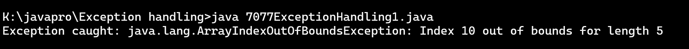
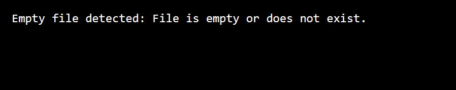

1. Write a Java program that throws an exception and catch it using a try-catch block.
CODE :-
class Exception
{
public static void main(String[] args)
{
try {
int[] arr = new int[5];
arr[10] = 50; // This statement will throw an exception
} catch (ArrayIndexOutOfBoundsException e) {
System.out.println("Exception caught: " + e);
}
}
}
OUTPUT :-

2. Write a Java program to create a method that takes an integer as a parameter and throws an exception if the number is odd.
CODE :-
class OddNum_Exp {
public static void main(String x[]) {
int a =4;
checknum(a);
a =5;
checknum(a);
}
public static void checknum(int a) {
try {
checkEvenNum(a);
System.out.println(a + " is even.");
} catch (IllegalArgumentException e) {
System.out.println("Exception :" + e.getMessage());
}
}
public static void checkEvenNum(int b) {
if (b % 2 != 0) {
throw new IllegalArgumentException(b + " is odd.");
}
}
}
OUTPUT :-
3. Write a Java program to create a method that reads a file and throws an exception if the file is not found
CODE :-
import java.io.File;
import java.io.FileNotFoundException;
import java.util.Scanner;
class Read_File {
public static void main(String x[] ) {
try {
r_File("test2.txt");
} catch (FileNotFoundException e) {
System.out.println("Exception: " + e.getMessage());
}
}
public static void r_File(String fname) throws FileNotFoundException {
File file = new File(fname);
Scanner scanner = new Scanner(file);
while (scanner.hasNextLine()) {
String line = scanner.nextLine();
System.out.println(line);
}
scanner.close();
}
}
OUTPUT :-
4. Write a Java program that reads a list of numbers from a file and throws an exception if any of the numbers are positive
CODE :-
import java.io.BufferedReader;
import java.io.File;
import java.io.FileNotFoundException;
import java.io.FileReader;
import java.io.IOException;
class exception4 {
class PositiveNumberException extends Exception {
public PositiveNumberException(String message) {
super(message);
}
}
public static void main(String[] args) {
File filename = new File("numbers.txt");
try {
new exception4().checkPositiveNumbers(filename);
System.out.println("No positive numbers found.");
} catch (PositiveNumberException e) {
System.err.println("Exception: " + e.getMessage());
} catch (IOException e) {
System.err.println("Error reading the file: " + e.getMessage());
}
}
void checkPositiveNumbers(File filename) throws IOException, PositiveNumberException {
try {
BufferedReader reader = new BufferedReader(new FileReader(filename));
String line;
while ((line = reader.readLine()) != null) {
int number = Integer.parseInt(line);
if (number > 0) {
throw new exception4.PositiveNumberException("Positive number found: " + number);
}
}
reader.close();
} catch (FileNotFoundException e){
throw new IOException("The specified file was not found.", e);
}
}
}
OUTPUT :-
5. Write a Java program that reads a file and throws an exception if the file is empty.
CODE :-
import java.io.File;
import java.io.FileReader;
import java.io.IOException;
class EmptyFileException extends Exception {
public EmptyFileException(String message) {
super(message);
}
}
class CheckEmptyFile {
public static void main(String[] args) {
try {
checkFileNotEmpty("data.txt");
} catch (EmptyFileException e) {
System.out.println("Empty file detected: " + e.getMessage());
} catch (IOException e) {
System.out.println("File not found or cannot be read: " + e.getMessage());
}
}
public static void checkFileNotEmpty(String fileName) throws IOException, EmptyFileException {
File file = new File(fileName);
if (!file.exists() || file.length() == 0) {
throw new EmptyFileException("File is empty or does not exist.");
}
FileReader reader = new FileReader(file);
reader.close();
}
}
OUTPUT :-

6. Write a Java program to create a method that takes a string as input and throws an exception if the string does not contain vowels.
CODE :-
import java.util.Scanner;
class vowelchecker
{
public static void main(String args[])
{
try
{
Scanner sc = new Scanner(System.in);
System.out.print("Enter a String : ");
String str = sc.nextLine();
checkForVowels(str);
System.out.println("String Contains Vowels.");
}
catch(NoVowelsException e)
{
System.out.println("Exception : "+e.getMessage());
}
}
static void checkForVowels(String input) throws NoVowelsException
{
if(!input.matches(".*[AEIOUaeiou].*"))
{
throw new NoVowelsException("The Input string does not contains any vowels.");
}
}
}
class NoVowelsException extends Exception
{
public NoVowelsException(String message)
{
super(message);
}
}
OUTPUT :-
7. Write a Java program to manage the driver with path, username and password, if not successful then throw an exception
8. Write a Java program to show an example of throws Keyword.
CODE :-
class Main {
static void checkAge(int age) {
if (age < 18) {
throw new ArithmeticException("Access denied - You must be at least 18 years old.");
}
else {
System.out.println("Access granted - You are old enough!");
}
}
public static void main(String[] args) {
checkAge(15); // Set age to 15 (which is below 18...)
}
}
OUTPUT :-
9. Write a Java program to show an example of multiple catch
CODE :-
class multiplecatch{
public static void main(String[] args) {
try{
int a[]=new int[5];
a[5]=30/0;
}
catch(ArithmeticException e)
{
System.out.println("Arithmetic Exception occurs");
}
catch(ArrayIndexOutOfBoundsException e)
{
System.out.println("ArrayIndexOutOfBounds Exception occurs");
}
catch(Exception e)
{
System.out.println("Parent Exception occurs");
}
System.out.println("rest of the code");
}
}